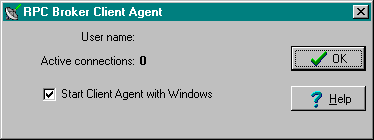
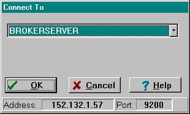
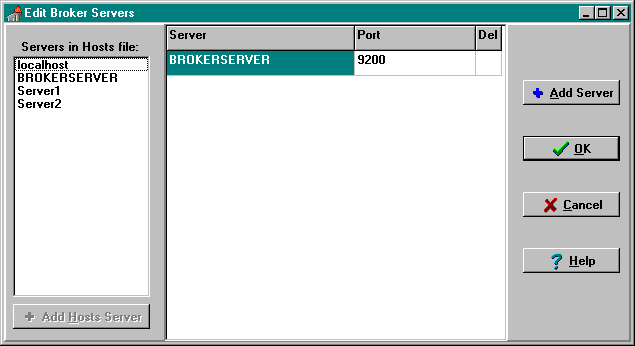

System
Features
Topics
RPC Broker
Client Agent
The RPC Broker Client Agent program (i.e.,
CLAGENT.EXE) runs in support of the
single signon process (a.k.a. auto signon). This
program automatically and continuously runs in the background on the client
workstation and normally should not be closed or shut down by the user.
A satellite dish icon will be displayed in the System Tray indicating the Broker
Client Agent is running. The icon will change when an active connection is made
to the server, and a green line indicating an active connection will emanate
from the satellite dish.

By double clicking on the Client Agent
icon, you can see how many active connections are currently open. However, the "Active
connections" count may include "orphan" connections that are no
longer active. Use this count as an approximate count only.
 |
The "Start Client Agent with
Windows" checkbox should be checked so that single
signon, if allowed, will be operational. By default, this box is checked.
However, if a particular workstation is not always connected to the network upon
startup, you may wish to prevent Client Agent from starting automatically. You
can always reset it to start automatically by starting Client Agent manually
first and re-checking this check box. |
"Connect To"
Application Window
Upon logging in to a VISTA client/server application, users may be
presented the "Connect To" application window as displayed in Figure 3
below. This application window may be used by Delphi VISTA
client/server applications that wish to allow users to select a server name and
associated port from a list of servers entered into the Windows
Registry. For example, this can be useful when you want
to run the application in either a Test or Production account.

Edit Broker
Servers Program
If someone in IRM wishes to add, modify,
or delete servers and ports to be used by the Broker, they will run the Edit
Broker Servers program (i.e., ServerList.EXE, see Figure below) to modify or add
Listeners/Ports to the Windows Registry. ServerList.EXE
can be copied to any workstation for this purpose.

|
This program only displays
HOSTS file entries; it does not edit the HOSTS file. |
Adding Entries:
You are given two methods of adding new
server entries to the Registry:
- A list of servers available from your
HOSTS file is displayed in the Servers in Hosts file
list box on the left of the dialog box. Thus, you don't have to remember and
type the server names yourself. Select one or more from the list and press the
Add Hosts Server button. This creates the new grid line(s) with the server(s)
selected automatically "stuffed" into the Server cell(s). Complete
each new entry by typing in the appropriate port(s). When finished, press OK.
- Alternatively, you can press the Add
Server button on the right of the dialog box. This creates a new grid line.
Enter the name of the server you want added. Complete each new entry by typing
in the appropriate port(s). When finished, press OK. The program will attempt to
resolve the server name to an IP address either through the Domain Name Service
(DNS) or by looking it up in the HOSTS
file on the client workstation. If this is successful, the new entry will be
added to the Registry. If the server name cannot be resolved, an error message
will be displayed and you will have to correct your entry.
|
Hint: If you're running a PC Network
with Windows NT, the BROKERSERVER added to the Services list on the NT network
will speed up client access times (i.e., keeps it from having to do a double
lookup with first IP then service, it merely looks at the Services list). |
Modifying Entries:
In order to modify or change a server or
port, simply place the cursor in the appropriate Server or Port field and make
the change. When finished, press OK.
|
Server names must be resolvable
through DNS or the HOSTS file. |
Deleting Entries:
In order to delete a pre-existing entry
just click in the Del column. An asterisk appears in the Del column signifying a
deletion. Another click toggles the deletion off. When finished, press OK.
Stand-alone
Programs and their Associated Help Files
Each of the following stand-alone Broker
programs, distributed with this version of the Broker, have an associated help
file that must reside in the
same directory in order to provide online help for that particular
stand-alone program:
|
Stand-alone Program |
Associated Help File |
Location |
|
BROKERPROGPREF.EXE |
BROKERPROGPREF.HLP
|
Programmer Workstation |
|
CLAGENT.EXE |
CLAGENT.HLP |
End-user Workstation |
|
RPCTEST.EXE |
RPCTEST.HLP |
End-user Workstation |
|
SERVERLIST.EXE |
SERVERLIST.HLP |
Programmer Workstation |
The installation of the Broker will
automatically load these associated files into the same directory. If you choose
to "export" a stand-alone program (e.g., SERVERLIST.EXE)
to another client workstation, make sure you include its associated help file
and place them both in the same directory.
|
For more information on the
BROKERPROGPREF.EXE, please refer to the Online RPC Broker Developer's Guide
(i.e., BROKER.HLP).
For more information on the CLAGENT.EXE, please
refer to the "RPC Broker Client Agent"
topic.
For more information on the RPCTEST.EXE,
please refer to the Chapter 3, "Troubleshooting"
topic.
For more information on the SERVERLIST.EXE, please refer to the "Edit Broker Servers Program" topic. |
HOSTS File
The HOSTS file is an ASCII text file that
contains a list of the servers and their IP addresses. However, use of the HOSTS
file is not a requirement for the Broker. The use of the HOSTS file
depends on the way the local area network (LAN) is implemented and managed at a
site. Clients can bypass the HOSTS file and use DNS, DHCP
(Dynamic Host Configuration Protocol), or WINS (Windows Name Service).
To modify or add servers to the HOSTS
file, edit the file using a text editor (e.g., Microsoft Notepad).
The following table illustrates where you
can find this file based on your client Windows operating system (OS):
|
Version of Windows OS |
File (Location and Name) |
|
Windows 95 |
C:\WINDOWS\HOSTS |
|
Windows NT 3.51 |
C:\WINDOWS\SYSTEM32\DRIVERS\ETC\HOSTS
|
|
Windows NT 4.0 |
C:\WINNT\SYSTEM32\DRIVERS\ETC\HOSTS
|
A sample of the Windows 95 HOSTS file
(i.e., C:\WINDOWS\HOSTS.SAM) is displayed below (modifications/additions made to
this sample file are italicized):
# Copyright (c) 1994 Microsoft Corp.
#
# This is a sample HOSTS file used by Microsoft TCP/IP for Chicago
#
# This file contains the mappings of IP addresses to host names. Each
# entry should be kept on an individual line. The IP address should
# be placed in the first column followed by the corresponding host
# name. The IP address and the host name should be separated by at
# least one space.
#
# Additionally, comments (such as these) may be inserted on individual
# lines or following the machine name denoted by a '#' symbol.
#
# For example:
#
# 102.54.94.97 rhino.acme.com # source server
# 38.25.63.10 x.acme.com # x client host
#
# IP Host
# ADDRESS Name Description
# | | |
# | | |
# V V V
127.0.0.1 localhost # loopback
192.1.1.1 BROKERSERVER # Broker Server
|
The last entry in this file (i.e.,
BROKERSERVER) was added to the sample HOSTS file for illustration purposes. We
recommend you put in an entry that points to the main server you intend using
with the Broker the majority of the time (e.g., BROKERSERVER). VISTA applications can specify any server they
wish.
 |
A DHCPSERVER entry is still required
for software that uses Version 1.0 of the Broker. You may want to create an
additional entry for BROKERSERVER in your HOSTS file or DNS. However,
do not remove the DHCPSERVER entry already present. |
Adding Entries:
To add entries in the HOSTS file:
- Move the cursor to the end of
the last line displayed in the file.
- Press the Enter Key to create a
new line.
- On the new line, enter the
desired IP address beginning in the first column, as described in Figure 5
above. As recommended, add an appropriate IP address for the BROKERSERVER Host
name as the next entry below "127.0.0.1".
- After typing the IP address,
type at least one space and enter the Host name that corresponds to that IP
address. As recommended, type in BROKERSERVER as the next entry below "loopback".
For
example, the entry for a server at your site with an IP address of 192.1.1.1
would look like the following:
127.0.0.1 localhost # loopback <---existing entry
192.1.1.1 BROKERSERVER # Broker Server <---added entry
- Repeat steps a - d until you
have entered all of the IP addresses and corresponding Host names you wish to
enter.
- When your entries are complete,
use Notepad's File | Save command to save the HOSTS file.
|
Do not save the HOSTS file with an
extension! |
- Close the HOSTS file.
Modifying Entries:
To modify entries in the HOSTS file:
- Move the cursor to the line to be
modified.
- Modify the IP address, Host name, or
both.
- Make sure that at least one space
separates the IP address from the corresponding Host name.
- Make sure you have an entry for
BROKERSERVER in this file.
- Repeat steps a - b until you have
modified all of the IP addresses and corresponding Host names you wish to
change.
- When your entries are complete, use
Notepad's File | Save command to save the HOSTS file.
|
Do not save the HOSTS file with an
extension! |
- Close the HOSTS file.
What
Happened to the Client Manager?
The Client Manager, previously distributed
with version 1.0 of the Broker, is no longer used by this version of the Broker.
In version 1.0 of the Broker, the Client Manager provided two types of services:
- It was used to invoke the
RPCBI.DLL.
- It was used by developers to set
programmer preferences for using the TRPCBroker component.
The RPCBI.DLL that was distributed with
the RPC Broker V. 1.0 is no longer used, thus, the Client Manager is no longer
required with this version of the Broker. Configuration of programmer
preferences will now be done via the Broker Programmer Preferences Application
Window.
|
For more information on the Broker
Programmer Preferences Application Window, please refer to the "RPC Broker
Programmer Preference Editor" topic in the Online RPC Broker Developer's
Guide (i.e., BROKER.HLP). |
|
The RPCBI.DLL and Client Manager
(i.e., CLMAN.EXE) installed with Broker V. 1.0 must not be removed from
the vista/broker directory on the client workstation. They are still required
for 16-bit Broker-based applications created using version 1.0 of the Broker
(e.g., PCMM). |
What Happened to
the VISTA.INI File?
The VISTA.INI file will no longer be used
by applications built with Version 1.1 of the Broker. However, this file will
continue to be used by applications built using version 1.0 of the Broker (e.g.,
PCMM). During the installation of the Broker, relevant data from the VISTA.INI
file will be moved to the Windows Registry. Subsequent
reads and writes will be done via the Registry.
|
The VISTA.INI file created with
Broker V. 1.0 must not be removed from the Windows directory on the client
workstation. It is still required for 16-bit Broker-based applications created
using version 1.0 of the Broker (e.g., PCMM). |
The following are a list of items from the
present VISTA.INI file and their disposition with this version of the Broker:
|
VISTA.INI File Item |
Disposition |
|
ClientManagerPath
ErrorRetry
ClientManagerState
|
Client Manager items - not moved
to the Registry. |
|
IdeConnect
ClearParameters
ClearResults
ListenerPort
Server
|
Programmer items - moved to the Registry
via a developer workstation installation (to be edited by the new Configuration
form). |
|
SignonPos
SignonSiz
IntroBackCol
IntroTextFont
|
Signon items - moved to the Registry
(these did not exist in version 1.0). These items will now be edited
from the Signon form.
For more information, please refer to the "Users Can Customize Signon Window"
topic in Chapter 2 of this manual. |
|
HostsPath |
No longer useful (i.e., Broker V. 1.1
Delphi code will not reference it). |
|
[RPCBroker_Servers] section |
Server/Port pairs - moved to the Registry
via general workstation installations. These entries will now be edited via the
Edit Broker Servers application.
For more information, please refer to the "Edit Broker Servers Program" topic in this
chapter. |
Broker
Listeners and Ports
This version of the Broker allows sites to
start multiple Broker Listener processes in one account. Sites
can now also run multiple Listeners in the same UCI-volume, on
different IP addresses/CPUs, listening to the same port. If you
need to run several Broker Listeners on the same IP address/CPU (e.g., one for a
Production account and another for a Test account), they must all be using
different ports. For example, if the Listener in the Production account is on
port 9200, start another Listener in the Test account on port 9201.
Alternatively, you may want to allocate entire ranges of ports for various
accounts. If the IP addresses/CPUs are different, then the port can be the same.
For example, this means that you can run a Broker Listener on every machine
listening on port 9200. This will be important when using DNS
for distributing client connections across several machines.
Clients and servers in a medical center
must agree on some known "application service ports". We started to
use port 9200 for the Broker Listener as a convention but a medical center may
fire up several servers, as long as the combination of IP and Port is unique.
Clients will attempt to connect to the servers on these established ports. Port
9200 was an example; hospitals could choose anything they have available greater
than 1024 (i.e., sockets 1 to 1024 are reserved for standard, well-known
services like SMTP, FTP, Telnet, etc.).
It is possible that your port selection
may conflict with someone else using the same port on the same machine. However,
this should not affect you if you are running on different machines.
Someday hospitals may want to query each other. When this happens, hospitals
would have to agree on a known service port. In the Internet community, port 25
is mail and everyone is guaranteed to find an SMTP server attached to that port.
We may eventually have a service port that all hospitals would have to support
to allow for inter-medical center communications.
Related Topics:
Starting
and Stopping Listeners
The preferred method for starting and
stopping Listeners in DSM and OpenM is through the STATUS
field of the
RPC BROKER SITE PARAMETERS file (#8994.1).
While TaskMan is running, you should be able to start and stop Listeners at any
time by setting the STOPPED Listener to START and a RUNNING Listener to STOP.
Out of the six possible states: START, STARTING, RUNNING, STOP, STOPPING, and
STOPPED, you can only enter START when a Listener is STOPPED and STOP when a
Listener is RUNNING. The other states are controlled by the Broker itself.
To set the STATUS field, invoke VA FileMan
V. 21.0 using Q^DI and edit the new RPC BROKER
SITE PARAMETERS file (#8994.1). Set this field either to START or STOP and,
assuming that TaskMan is running, the Listener will be started or stopped
accordingly. When STATUS is set to START, the field will change to RUNNING.
Conversely, when STATUS is set to STOP, the field will change to STOPPED.
To
start up a Listener directly:
- Log into your M server
- Enter the following at the M prompt:
>D STRT^XWBTCP(Listener port)
|
As a convention, the RPC Broker uses
9200 as the Listener port, however, sites can choose any available port greater
than 1024. |
To stop
a Listener directly:
- Log into your M server
- Enter the following at the M prompt:
>D STOP^XWBTCP(Listener port)
|
It is important to stop all Listeners
before shutting down the system! |
Starting
Listeners via an Option
The XWB LISTENER STARTER option can be
used to start one or more Broker Listeners at one time. Additionally, this
option can be used to automatically start all of the Listener processes you need
when TaskMan starts up, such as after the system is rebooted or configuration is
restarted.
The XWB LISTENER STARTER option works in
combination with the new CONTROLLED BY
LISTENER STARTER (#2) subfield of a Port (#1) subfield of a Listener (#7)
multiple field in the RPC BROKER SITE
PARAMETERS file (#8994.1). The CONTROLLED BY LISTENER STARTER field is a
YES/NO set of codes type field. All of the Listener entries in this file that
have CONTROLLED BY LISTENER STARTER set to YES will be started when the XWB
LISTENER STARTER option is run.
|
DSM sites must have TaskMan started
via DCL, if they want to use the XWB LISTENER STARTER option to automatically
start Listener processes. |
In order to automatically start the
Listener(s) when TaskMan is restarted (i.e., in addition to the entries in the
RPC BROKER SITE PARAMETERS file [#8994.1]),
enter the XWB LISTENER STARTER option in the OPTION
SCHEDULING file (#19.2). Schedule this option with SPECIAL QUEUING set to
STARTUP. You can do this by using the TaskMan option:
Schedule/Unschedule Options:
Select Systems Manager Menu Option: TASKMAN Management
Select Taskman Management Option: SCHedule/Unschedule Options
Select OPTION to schedule or reschedule: XWB LISTENER STARTER <RET>
Start RPC Broker Listeners
...OK? Yes// <RET> (Yes)
(R)
Edit Option Schedule
Option Name: XWB LISTENER STARTER
Menu Text: Start RPC Broker Listeners TASK ID:
__________________________________________________________________________
QUEUED TO RUN AT WHAT TIME:
DEVICE FOR QUEUED JOB OUTPUT:
QUEUED TO RUN ON VOLUME SET:
RESCHEDULING FREQUENCY:
TASK PARAMETERS:
SPECIAL QUEUEING: STARTUP
__________________________________________________________________________ |
Obtaining an
Available Listener Port (for Alpha/VMS systems only)
To obtain the TCP/IP address for your
local server on an Alpha/VMS system enter the following command at the system $
prompt:
$ UCX SHOW DEV
You will get a list showing the following
kinds of information:
Port Remote
Device_socket Type Local Remote Service Host
bg3 STREAM 5001 0 HL7 0.0.0.0
bg23 STREAM 9700 0 Z3ZTEST 0.0.0.0
bg24 STREAM 9600 0 ZSDPROTO 0.0.0.0 |
For example, if 9200 shows up in the Local
Port column, some other application is already using this port number and you
should choose another port.
|
If IRM wishes to add, modify, or
delete servers and ports used by the Broker, please refer to the "Edit Broker Servers Program" topic in this
chapter. |
Load
Balancing on Alpha Systems
The Broker, like any telnet or IP process,
can be load balanced on DSM Alpha systems if UCX 4.1 is running. The actual
steps on configuring UCX for load balancing can be acquired from the ALPHA/AXP
technical support group and will not be discussed here.
Multiple Broker servers can run on the
same port as long as the machine IP addresses are unique. This is not a
Broker requirement; it is a TCP/IP requirement. This capability is necessary for
UCX load balancing. The multiple servers will receive a common alias that will
be the connection destination.
In UCX, you should use the BIND
alias:
For example:
UCX> show host vista.sitename.med.va.gov
BIND database
Server: 152.999.999.xxx 999TNG
Host address Host name
152.999.999.yy1 VISTA.SITENAME.MED.VA.GOV
152.999.999.yy2 VISTA.SITENAME.MED.VA.GOV
152.999.999.yy3 VISTA.SITENAME.MED.VA.GOV
152.999.999.yy4 VISTA.SITENAME.MED.VA.GOV
152.999.999.yy5 VISTA.SITENAME.MED.VA.GOV |
In order to use load balancing, your
client workstation needs to have DNS enabled and pointing
to the IP address of the DNS server in the list. The Broker on the client will
use the PC's DNS or HOSTS file to resolve the
BROKERSERVER host name. In the previous example, the first DNS server is
152.999.999.xxx.
For example, If you want PCMM GUI to be "balanced,"
use the Edit Broker Servers program to edit the servers in the Registry and add
in the alias VISTA.sitename.MED.VA.GOV.
You don't want the alias in the
HOSTS file because the HOSTS file is for static
bindings only. If you want to put the alias in the HOSTS file, then you will
have to make sure that the DNS server is first in the DNS list. Thus, when the
user selects the BIND alias, the DNS will resolve it to one of the unique IP
addresses and not to the HOSTS static assignment.
|
DSM sites do not need to have TaskMan
started in a DCL context in order to use load balancing. |
RPC
BROKER SITE PARAMETERS file
The RPC BROKER SITE PARAMETERS file
(#8994.1) includes fields that can be used to better manage the Broker Listeners
and ports. For example, the LISTENER field is a multiple that should contain all
the Listeners that you're planning to run on your system. A simple change of the
STATUS subfield from STOPPED to START will start that particular Listener.
Conversely, you can STOP a RUNNING Listener as well. Also, this file is used in
conjunction with the XWB LISTENER STARTER option that can be used to
automatically start up a Broker Listener.
|
DSM sites must have TaskMan started
via DCL, if they want to use the RPC BROKER SITE PARAMETERS file (#8994.1)
settings to start Listeners on other nodes. |
Editing
BOX-VOLUME Pairs
Access to the BOX-VOLUME PAIR (#.01)
subfield of the LISTENER (#7) field in the RPC
BROKER SITE PARAMETERS file (#8994.1) is limited. The reason for this is to
prevent sites adding inappropriate entries in this field by way of casual
editing through FileMan. The appropriate entries are all the BOX-VOLUME pairs
that can read and write to the ^XWB global (i.e., where the RPC BROKER SITE
PARAMETERS file resides). However, when editing this pointer-type field, you may
see other BOX-VOLUME combinations that are in your
TASKMAN SITE PARAMETER file (#14.7).
Jobs running in those other BOX-VOLUME combinations cannot reach the ^XWB
global, and thus, those BOX-VOLUME combinations would not be appropriate.
In order to edit the BOX-VOLUME pairs, you
need to set the XWBCHK variable to the string "ALLOW" at the
programmer prompt prior to invoking FileMan. For example:
>S XWBCHK="ALLOW" D Q^DI
The following is an example of a
BOX-VOLUME pair:
KDE:ISC6A2
MSM for NT 4.3.0
MSERVER Replaces RPC Broker Listener Process
MSM for NT in version 4.3.0 introduced a
new generic TCP/IP Listener MSERVER. MSERVER is an actual routine in the
Manager's UCI that runs and listens to all of the ports that you specify in
SYSGEN. When a connection is established to one of these ports, MSERVER launches
your code at some TAG^ROUTINE that you specify. This is similar to VMS' UCX
utility. If you are running a Beta version of MSM 4.3 for NT, we encourage you
to upgrade to 4.3.0. Once you upgrade, you should stop using the RPC Broker
Listener and switch to the MSERVER.
Before MSERVER can be used, it must be
configured using SYSGEN. The following is an example from the CIO Field Office
in San Francisco:
- In the Manager's UCI run SYSGEN.
- In sequence pick the following options:
- 3 - Edit Configuration Parameters
- 15 - Network Configuration
- 12 - User-Defined Services
- Enter an unused index number and set it
up as indicated below:
- Enter Service Name <RPC BROKER>:
RPC BROKER
- Enter Routine Reference <MSM^XWBTCPC>:
MSM^XWBTCPC
- Select UCI <VAH,MNT>: VAH,MNT
- Enter Partition Size <80>: 80
- Enter Password <>: <RET>
- Enter TCPIP Port Number <9200>:
9200
- Autostart? <YES>: YES
However, specifying YES for Autostart is not enough
for MSERVER to start up when MSM is started. You must also add MSERVER to the
Automatic Startup List as indicated in Steps 4-6 below.
- To schedule MSERVER to start
automatically when MSM comes up, go to the SYSGEN main menu.
- In sequence pick the following options:
- 3 - Edit Configuration Parameters
- 3 - Autostart and Automounts
- 5 - Automatic Partition Startup
- Enter an unused index number and set it
up as indicated below:
- Enter UCI name <MGR>: MGR
- Enter Entry Reference <STARTUP^MSERVER("RPC
BROKER")>: STARTUP^MSERVER("RPC BROKER")
- Enter partition size <SYSTEM>:
SYSTEM
To start MSERVER manually, in the
Manager's UCI, type the following at the programmer prompt:
>J STARTUP^MSERVER("RPC Broker")
To shut down MSERVER in the Manager's UCI,
type the following at the programmer prompt:
>J SHUTDOWN^MSERVER("RPC Broker")
If you're successfully using MSERVER,
discontinue using the Broker Listener. That means you shouldn't use the
STRT^XWBTCP and STOP^XWBTCP entry points or the RPC
BROKER SITE PARAMETERS file.
Integrated
Single Signon for Multiple User Sessions
This version of the RPC Broker supports
Kernel's single signon from a client workstation to the server. Users need only
sign on once (i.e., enter their Access and
Verify codes) when accessing
both a
VISTA roll-and-scroll (e.g., Lab,
Pharmacy) and a VISTA
client/server GUI-based application (e.g., PCMM, CPRS) on the same workstation,
regardless of which application is started first. Once logged into the server,
the user will not be asked to re-enter their Access and Verify codes for
any subsequent VISTA applications
they may start.
Related Topics:
Enabling/Disabling
Single Signon
Control of the single signon functionality
is maintained and administered on the server for both VISTA client/server applications (i.e., GUI) and the
roll-and-scroll environment (i.e., terminal sessions). In support of that
functionality a new field, DEFAULT AUTO SIGN-ON,
was added to the Kernel System Parameters
file (#8989.3) and
AUTO SIGN-ON was added to the
NEW PERSON file (#200). The valid values for
these fields are Yes, No, or Disabled.
These new fields, in conjunction with the
existing multiple signon fields, give the sites control of the implementation of
single signon for users in both the GUI and roll-and-scroll environments. The
values in the AUTO SIGN-ON and MULTIPLE SIGN-ON
fields in the NEW PERSON file (#200) take precedence over the values in the
DEFAULT AUTO SIGN-ON and
DEFAULT MULTIPLE SIGN-ON fields in the
Kernel System Parameters file (#8989.3). Therefore, the fields in the NEW PERSON
file are checked first. If the user fields in the NEW PERSON file are null, the
values in the KERNEL SYSTEM PARAMETERS file will be used.
|
The AUTO SIGN-ON field in the NEW
PERSON file and the DEFAULT AUTO SIGN-ON field in the Kernel System Parameters
file are initially set to null. |
|
Single signon is not
supported on MSM systems. All MSM sites must set the DEFAULT AUTO SIGN-ON field
in the KERNEL SYSTEM PARAMETERS file (#8989.3) to Disabled. |
|
If a user is not allowed
multiple signons, they will only be allowed to initiate a single session
(i.e., automatically disallowing single signon). |
Related Topics:
Example 1:
If a user has an active VISTA session and has the following characteristics:
- Allowed multiple signons (i.e., the
MULTIPLE SIGN-ON field in the New Person file (#200) is set to Yes)
- Allowed auto signon (i.e., the AUTO
SIGN-ON in the New Person file (#200) is set to Yes)
They will be allowed to start another VISTA session without having to re-enter
their Access/Verify codes.
Example 2:
If a user has an active VISTA session and has the following characteristics:
- Allowed multiple signons (i.e., the
MULTIPLE SIGN-ON field in the New Person file (#200) is set to Yes)
- Not allowed auto signon (i.e., the AUTO
SIGN-ON field in the New Person file (#200) is set to No)
They will be allowed to start another VISTA session, however, they must re-enter
their Access and Verify codes.
File Settings:
The following table can be used as a guide
to control multiple signons and single signon (a.k.a. auto signon) for some
typical situations:
|
Description |
*User
Settings |
**System
Settings |
|
Multiple Signon: |
|
Disallow all users from having
multiple signons |
No/Null |
No |
|
Allow individual users to have
multiple signons |
Yes |
No |
|
Allow all users to have multiple
signons |
Yes/Null |
Yes |
|
Auto Signon:
NOTE: With the exception for disabling
auto signon, the following settings are only affective when users are allowed
multiple signons.
|
|
Stop auto signon |
Any Value |
†Disabled |
|
Allow individual users to have
auto signon |
Yes |
No |
|
Disallow individual users from
having auto signon |
No |
Yes |
|
Allow all users to have auto
signon |
Yes/Null |
Yes |
†Sites may choose to
disable single signon (stops calls to the Broker Client Agent) for all users in
the following situations:
- Network problems
- Broker not installed
- During installation of the Broker
|
Single signon is not
supported in MSM systems. All MSM sites must set the DEFAULT AUTO SIGN-ON field
in the KERNEL SYSTEM PARAMETERS file (#8989.3) to Disabled. |
*User Settings refers to the
NEW PERSON file (#200) and the following fields:
- MULTIPLE SIGN-ON (#200,200.04)
- AUTO SIGN-ON (#200,200.18)
|
The User Settings override the System
Settings except when disabling single signon! |
**System Settings refers to
the Kernel System Parameters file (#8989.3) and the following fields:
- DEFAULT MULTIPLE SIGN-ON (#8989.3,204)
- DEFAULT AUTO SIGN-ON (#8989.3,218)
RPC
Broker Message Structure
The messages that are sent from a server
to a client contain either several values or a single value. Presently, the RPC
Broker messages are bound by the Windows WINSOCK.DLL
specifications and the size of the symbol table. The server receives a message
from the client and parses out the name of the remote procedure call and its
parameters. The Broker module on the server looks up the remote procedure call
in the
REMOTE PROCEDURE file (#8994) and executes
the RPC using the passed parameters. At this point the server side of the
application processes the request and returns the result of the operation. If
the operation is a query, then the result is a set of records that satisfy that
query. If the operation is to simply file the data on the server or it is
unnecessary to return any information, then, typically, notification of the
success of the operation will be returned to the client.
The basic RPC Broker message structure
consists of the following:
- A header portion (which includes the name
of the remote procedure call)
- The body of the message (which includes
descriptors, length computations, and M parameter data)
Client/Server
Timeouts
The issue of timeouts is complex in a
client/server environment. This complicates, and even impedes, the server's
ability to recognize that the user has abandoned the session(s). Because the
user may be working with applications that rely solely on the client, long
periods of time may elapse that the server would traditionally have counted
against the user's time-out. However, such monitoring has little meaning for GUI
applications. This facet must also be addressed when training users who will be
accessing VISTA via workstations.
The Broker itself does not
implement any timeout mechanisms in a traditional VISTA
sense. However, a Broker connection will timeout after ten hours of inactivity
at which point the server job will terminate. Ten hours was chosen not for
security reasons, but rather to clean up servers from abandoned applications.